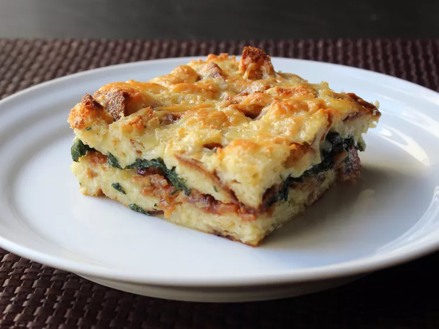

Spinach Strata
Home

Description
Making perfect homemade spinach strata doesn’t have to be tedious. This top-rated easy spinach strata recipe comes together quickly with a relatively short ingredient list.
Ingredients
- 1 tablespoon bacon grease
- 1 (1 pound) loaf day-old bread, cubed
- 12 large eggs
- 2 teaspoons kosher salt
- ½ teaspoon freshly ground black pepper
- 12 ounces shredded extra-sharp Cheddar cheese, divided
- 1 pound sliced bacon, cut crosswise into 1/2-inch strips
Steps
You’ll find the full, step-by-step recipe below — but here’s a brief overview of what you can expect when you make homemade easyspinach strata:
- Oil bottom and sides of a 9x13-inch baking dish with about a tablespoon of bacon fat
- Place bread cubes in a large mixing bowl.
- Crack eggs into a separate mixing bowl. Season with salt, pepper, cayenne, and nutmeg. Add cream and whisk mixture thoroughly.
- Bake strata in preheated oven until set, about 45 minutes. Optionally, you can broil the strata for a minute or two to brown the top.
- Preheat oven to 350 degrees F (175 degrees C).